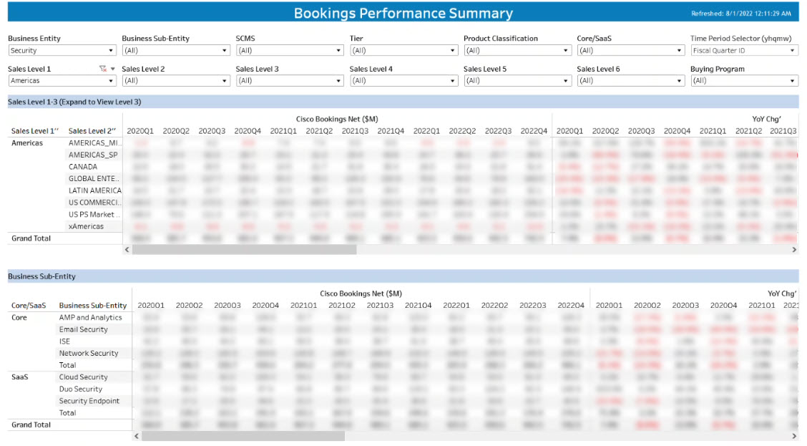

Screenshot 2
This chart shows the geographical distribution of bookings and how it correlates with revenue.

A brief showcase of some dashboards I've been with Tableau.
This dashboard shows the bookings per selected time period (e.g., year, quarter, month, etc.). Filters are provided for different dimensions in the data. Absolute bookings are shown along with YoY change.
This chart shows the geographical distribution of bookings and how it correlates with revenue.
A detailed breakdown of customer segments and their buying patterns.